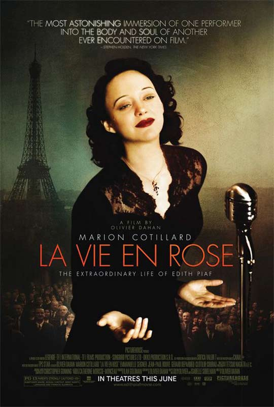
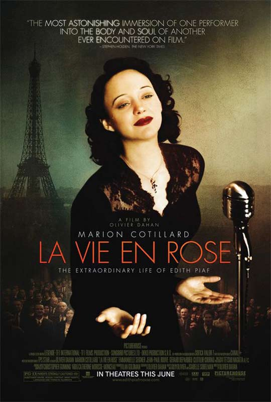
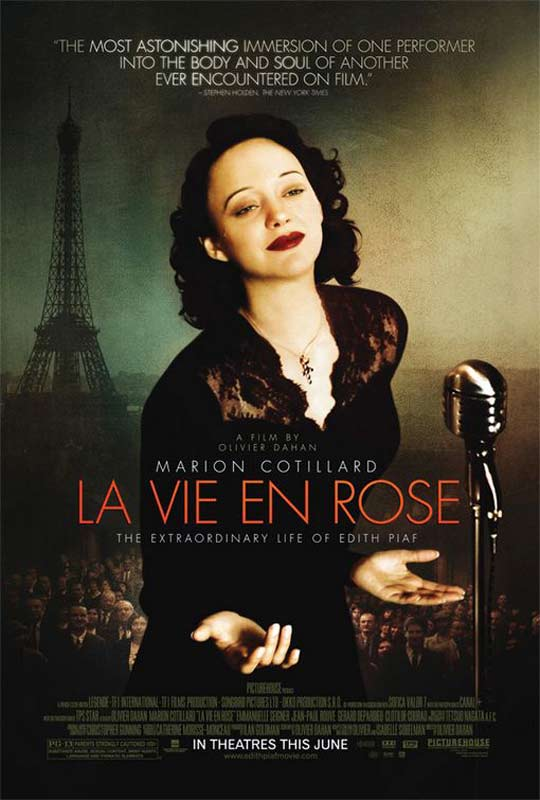

Esta es una lista de mis diez películas favoritas:
1. Pulp Fiction.
2. Interestelar.
3. Divergente.
4. El rey león.
5. La decisión de Anne.
6. La lista de Schindler.
7. Gladiator.
8. Amelie.
9. La vie en Rose.
10. El silencio de otros.


 
